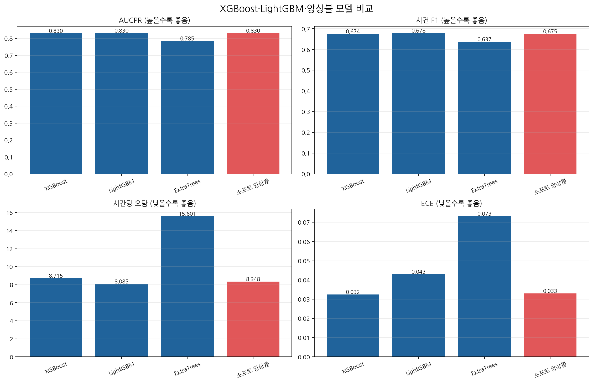
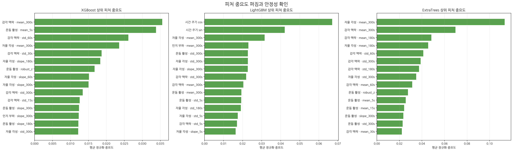
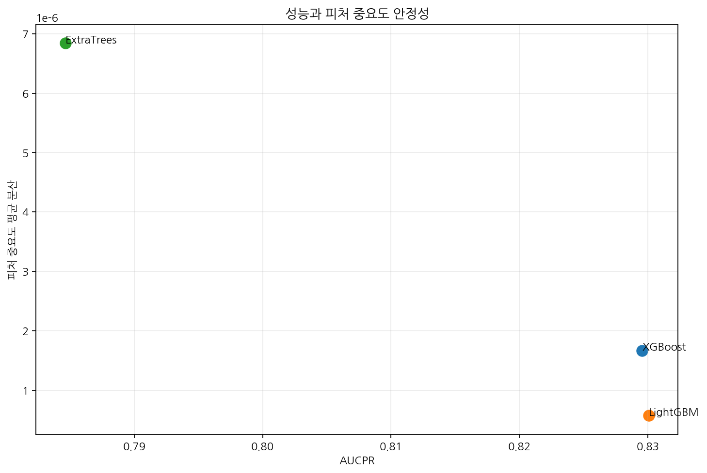
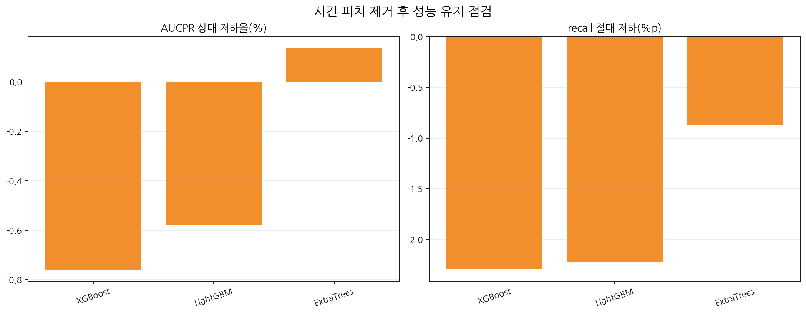
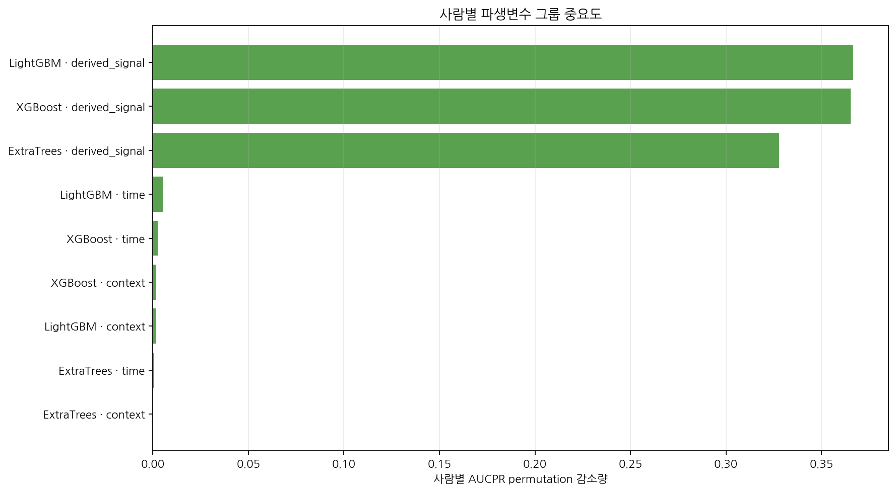

Kaggle bjcoding/multisensor-goal15-gpu-tree-benchmark-extratrees v4에서 GPU를 켜고 실행했습니다.
XGBoost·LightGBM은 cuda 요청·필수, ExtraTrees는 CUDA 구현이 없어 CPU 후보로 기록했습니다.
실행 결과의 장치 메타데이터와 로그를 보존했으며, 자동 승격은 하지 않았습니다.
| 모델 | 실행 장치 | AUCPR | 사건 recall | 사건 F1 | 시간당 오탐 | Brier | ECE |
|---|---|---|---|---|---|---|---|
| xgboost | cuda | 0.829549 | 0.566225 | 0.674204 | 8.714746 | 0.167791 | 0.032392 |
| lightgbm | cuda | 0.830078 | 0.567165 | 0.678253 | 8.085417 | 0.169417 | 0.042910 |
| extra_trees | cpu | 0.784629 | 0.562101 | 0.636864 | 15.601243 | 0.192284 | 0.073178 |
| soft_ensemble | mixed | 0.829873 | 0.565158 | 0.675282 | 8.347985 | 0.168358 | 0.033006 |
| 모델 | 시간 제거 AUCPR | 시간 제거 recall | 시간 제거 시간당 오탐 | 시간 제거 ECE |
|---|---|---|---|---|
| xgboost | 0.835854 | 0.589195 | 8.845335 | 0.033089 |
| lightgbm | 0.834864 | 0.589448 | 8.567486 | 0.041299 |
| extra_trees | 0.783553 | 0.570837 | 16.401449 | 0.074609 |
| soft_ensemble | 0.834176 | 0.588978 | 8.914797 | 0.046044 |
시간 피처를 제거했을 때 AUCPR와 recall이 증가한 모델은 시간 shortcut에 덜 의존한 것으로 해석할 수 있습니다. 이는 인과성이나 의료적 의미를 증명하지 않습니다.
| 모델 | 피처 그룹 | 평균 AUCPR drop | 양수 사람 비율 | 반복 양수 비율 | 반복 통과 |
|---|---|---|---|---|---|
| extra_trees | context | 0.000270 | 0.166667 | 0.518519 | 아니오 |
| extra_trees | derived_signal | 0.327759 | 1.000000 | 1.000000 | 예 |
| extra_trees | time | 0.000709 | 0.666667 | 0.759259 | 아니오 |
| lightgbm | context | 0.001363 | 0.666667 | 0.685185 | 아니오 |
| lightgbm | derived_signal | 0.366647 | 1.000000 | 1.000000 | 예 |
| lightgbm | time | 0.005299 | 0.500000 | 0.611111 | 아니오 |
| xgboost | context | 0.001698 | 0.333333 | 0.666667 | 아니오 |
| xgboost | derived_signal | 0.365198 | 1.000000 | 1.000000 | 예 |
| xgboost | time | 0.002544 | 0.500000 | 0.611111 | 아니오 |
세 모델 모두 derived_signal 그룹은 6명 전원에서 반복적으로 양의 성능 감소를 보였습니다. 따라서 합성 기준의 핵심 근거는 파생변수 그룹이며, 단일 피처 중요도만으로 최종 모델을 결정하지 않습니다.





게이트 통과 앵커 후보: lightgbm. 이번 결과에서는 LightGBM이 AUCPR·F1·시간당 오탐의 균형이 가장 좋았지만, 실제 운영 승격은 라벨·동기화·개인별 검증 뒤에 수동으로 결정해야 합니다.